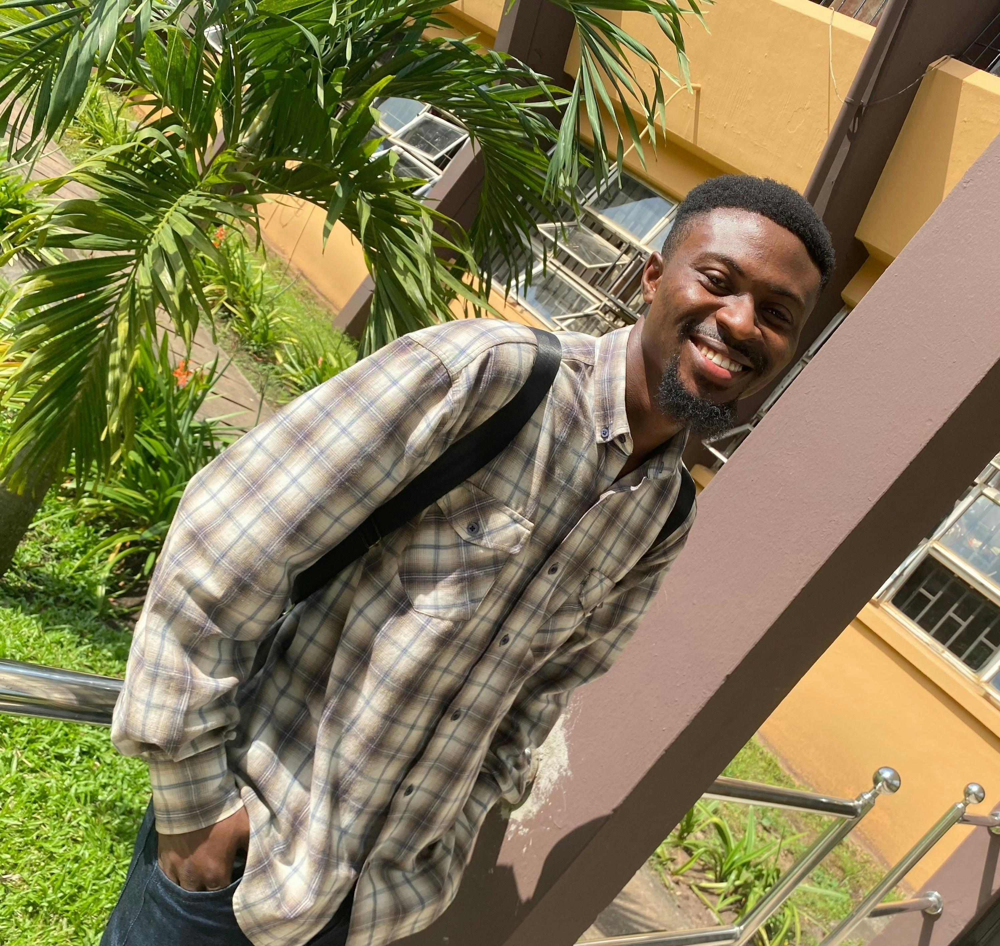
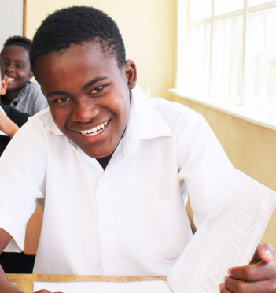

Voices from students transformed through digital learning access in rural African schools.
This video showcases how students combine talent, education, and technology to create impactful projects that help develop their communities and themselves.
The section below showcases students who have been empowered through access to technology and the use of their talents. This reflects my mission, which if executed fully will create lasting impact in education and communities across Africa.

Student, Rwanda
"Access to technology completely changed how I learn. Through online platforms, I gained skills in robotics and innovation that I never thought were possible in my school. Now I mentor younger students, helping them see that their ideas can shape Africa's future too."

Student, Ghana
"Technology opened my eyes to what's possible beyond my classroom. With online learning and mentorship, I learned graphic design and started creating visual projects for local businesses. It showed me that my talent can be a career, not just a hobby."
Student, Kenya
"I used to think only people in big cities could achieve great things. When I started using digital learning tools, I realised I could compete and create just like them. Today, I help other girls in my school learn basic coding and digital literacy."
Together, we can transform rural African schools and unlock the potential of the next generation.
Get Involved